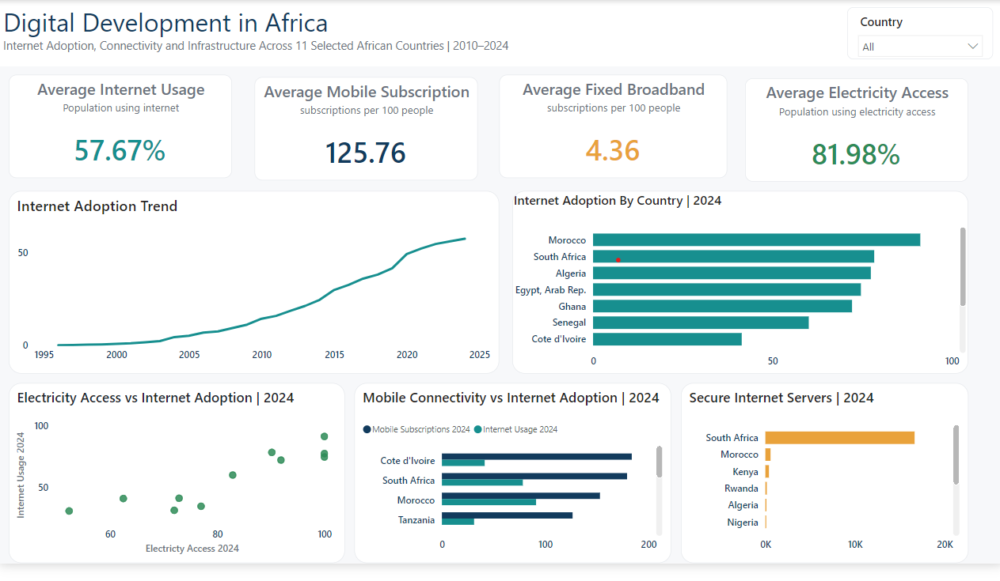

Digital Development in Africa
Examining internet adoption, mobile connectivity, electricity access and digital infrastructure across 11 African countries from 2010–2024.
- Five development indicators
- Executive one-page dashboard
- Country and trend comparisons